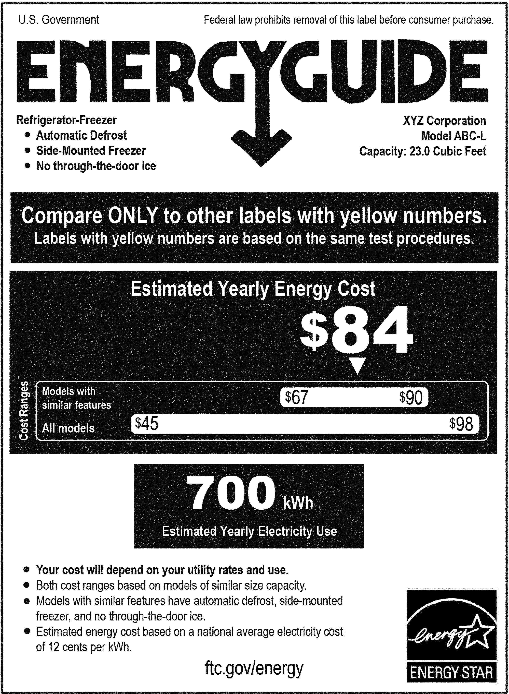

Lesson 19 took a simulation approach to observing sampling variation: generate many trials from a source such as a DAG and observe how the same sample statistic varies from trial to trial. We quantified the sampling variation in the same way we usually quantify variation, taking the variance of the sample statistic across all the trials. We called this measure of variation the sampling variance as a reminder that it comes from repeated trials of sampling.
In this Lesson, we will examine a more informative format for reporting sampling variation: the confidence interval. We will also consider an important general concept for interpreting confidence intervals: precision of measurement. We will contrast precision with accuracy to help you avoid the common error of mistaking precision with accuracy.
Taking into consideration that precision is a general issue in any kind of quantitative reporting, not just statistical modeling, it might have been better if “precision interval” had been used instead of “confidence interval.” The word “confidence” in “confidence interval” has nothing to do with self-assuredness, boldness, or confidentiality. (When “confidence interval” was introduced in the 1930s, the word was chosen to avoid a once-bitter technical dispute in the philosophy of probability.)
Summary: The confidence interval is a measure of precision: the reproducibility from sample to sample. It tells us nothing about accuracy. Without understanding the difference between “precision” and “accuracy,” it is difficult to interpret confidence intervals appropriately.
Formats for confidence intervals
We have been looking at confidence intervals since Lesson 11, were we introduced the conf_interval() function for displaying model coefficients. To illustrate, consider the running time (in seconds, s) for Scottish hill races as a function of the race distance (in km) and overall height climbed (in meters, m):
As always, there is a model coefficient for each term mentioned in the model specification, time ~ distance + climb. Here, those terms give an intercept, a coefficient on distance, and a coefficient on climb. Each coefficient comes with two other numbers, called .lwr and .upr in the report, standing for “lower” and “upper.” The confidence interval runs from the lower number to the upper number.
Focus for the moment on the distance coefficient: 253.8 s/km. The confidence interval runs from 246 to 261 s/km. In previous Lessons about model values—the output of the model function when given values for the explanatory variables—we have emphasized the coefficient itself..
Statistical thinkers, knowing that there is sampling variation in any coefficient calculated from a data sample, like to use the word “estimate” to refer to the calculated value. Admittedly, the computer carries out the calculation of the coefficient without mistake and reports it with many digits. But those digits do not incorporate the uncertainty due to sampling variation. That’s the role of the confidence interval.
The meaning of a confidence interval such as the 246-to-261 s/km interval shown above is, “Any other estimate of the coefficient (made with other data) is consistent with ours so long as it falls within the confidence interval.”
An alternative, but entirely equivalent format for the confidence interval uses \(\pm\) (plus-or-minus) notation. The interval [246-261] s/km in \(\pm\) format can be written 254 \(\pm\) 8 s/km.
Significant digits?
Another convention for reporting uncertainty—legendarily emphasized by chemistry teachers—involves the number of digits with which to write a number: the “significant digits.” For instance, the distance coefficient reported by the computer is 253.808295 s/km. Were you to put this number in a lab report, you are at risk for a red annotation from your teacher: “Too many digits!”
According to the significant-digits convention, a proper way to write the distance coefficient would be 250 s/km, although some teachers might prefer 254 s/km.
The situation is difficult because the significant-digit convention is attempting to serve three different goals at once. The first goal is to signal the precision of the number. The second goal is to avoid overwhelming human readers with irrelevant digits. The third goal is to allow human readers to redo calculations. These three goals sometimes compete. An example is the [246,261] s/km confidence interval on the distance coefficient reported earlier. For this coefficient, the width of the confidence interval is about 15 s/km. This suggests that there is no value to the human reader in reporting any digits after the decimal point. But a literal translation of [246-261] into \(\pm\) format would be 253.5 \(\pm\) 7.5. Now there is a digit being reported after the decimal point, a digit we previously said isn’t worth reporting!
As a general-purpose procedure, I suggest the following principles for model coefficients:
Always report an interval in either the [lower, upper] format or the center \(\pm\) spread format. It doesn’t much matter which one.
As a guide to the number of digits to print, look to the interval width, calculated as upper \(-\) lower or as 2 \(\times\) spread. Print the number using the interval width as a guide: only the first two digits (neglecting leading zeros) are worth anything.
When interpreting intervals, don’t put much stock in the last digit. For example, is 245 km/s inside the interval [246, 261] km/s. Not mathematically. But remembering that the last digit in 246 is not to be taken as absolute, 245 is for all practical purposes inside the interval.
As I write (2024-01-11), a news notice appeared on my computer screen from the New York Times.
The “Inflation Ticks Higher” in the headline is referring to a change from 3.3% reported in November to 3.4% reported in December. Such reports ought to come with a precision interval. To judge from the small wiggles in the 20-year data, this would be about \(\pm 0.2\)%. A numerical change from 3.3% to 3.4% is, taking the precision into account, no change at all!
Precision versus accuracy
In everyday language the words “precision” and “accuracy” are interchangeable; both describe how well a measurement has been made. Nevertheless there are two distinct concepts in “how well.” The easier concept has to do with reproducibility and reliability: if the measurement is taken many times, how much will the measurements differ from one another? This is the same issue as sampling variation. In the technical lingo of measurement, reproducibility or sampling variation is called “precision. Precision is just about the measurements themselves.
In contrast, in speaking technically we use “accuracy” to refer to a different concept than “precision.” Accuracy cannot be computed with just the measurements. Accuracy refers to something outside the measurements, what we might call the “true” value of what we are trying to measure. Disappointingly, the “true” value is an elusive quantity since all we typically have is our measurements. We can easily measure precision from data, but our data have practically nothing to say about accuracy.
An analogy is often made between precision and accuracy and the patterns seen in archery. Figure 20.1 shows five arrows shot during archery practice. The arrows are in an area about the size of a dinner plate 6 inches in radius: that’s the precision.
Figure 20.1: Results from archery practice
A dinner-plate’s precision is not bad for a beginner archer. Unfortunately, the dinner plate is not centered on the bullseye but about 10 inches higher. In other words, the arrows are inaccurate by about 10 inches.
Since the “true” target is visible, it is easy to know the accuracy of the shooting. The analogy of archery to the situation in statistics would be better if the target was shown in plane white, that is, if the “true” value were not known directly. In that situation, as with data analysis, the spread in the arrows’ locations could tell us only about the precision.
To illustrate the difference between precision and accuracy, let’s look again at the coefficient on distance in the Scottish hill racing model. Our original model was
The second confidence interval, [374, 388] s/km, is utterly inconsistent with the earlier confidence interval [246, 261]. This is a matter of accuracy. The distance coefficient in the first model is aimed at a different target than the distance coefficient in the second model. In exploring hill-racing data, should we look at distance taking into account climb (the first model) or ignoring climb (the second model). The width of the confidence interval addresses only the issue of precision, not whether the model is accurate for the purpose at hand.
The confidence level
The confidence interval is designed to communicate to a human reader the influence of sampling variation as it plays out in the calculation of a model coefficient (or some other sample statistic such as the median or R^2). The two equivalent formats we use for the interval—for example, [374, 388] or equivalently 381 $—are intended to be easy to read and use for the intended purpose.
A more complete picture of sampling variation is provided by treating it as a noise model, as described in Lesson 15. We can choose an appropriate noise model by looking at the distribution shape for sampling variation. Experience has shown that an excellent, general-purpose noise model for sampling variation is the normal noise model. To support this claim we can use a simulation of the sort reported in Figure 19.2, where the distribution of coefficients across the 500 sampling trials has the characteristic shape of the normal model.
To show how that normal noise model relates to confidence intervals, we can calculate a confidence interval from data and compare that interval to a simulation of sampling variation. We will stick with the distance coefficient in the model time ~ distance + climb trained on the Scottish hill racing data in the Hill_racing data frame. But any model of any other data set would show much the same thing.
Recall that the confidence interval on distance is 246 s/km to 261 s/km. We can construct individual trials of sampling variation through a technique called “resampling” that will be described in Chapter 19. In essence, the resampling technique takes a sample of the same size from a data frame. In the simulation, we will use resampling to generate a “new” sample, train a model on that new sample, then report the distance coefficient and its confidence interval. Each trial will look like this:
Now, let’s plot the 10,000 coefficients, one from each trial:
Trials |>point_plot(.coef ~1, annot ="violin", point_ink =0.1, size =0.5) |>gf_errorbar(246+261~1, color ="red") |>add_plot_labels(y ="Coefficient on distance (s/km)")
Figure 20.2: Five-hundred trials in which the distance coefficient in the model time ~ distance + climb. The [246, 261] confidence interval from the actual data is drawn in red.
The distribution of the distance coefficient from the resampling trials has the shape of the normal noise model.
The large majority of the trials produced a coefficient that falls inside the confidence interval found from the original data.
Some of the trials fall outside that confidence interval. Sometimes, if rarely, the trial falls far outside the confidence interval.
A complete description of the possible range in the distance coefficient due to sampling variation would be something like Figure 20.2. For pragmatic purposes, however, rather than report 10,000 (or more!) coefficients we report just two values: the bounds of the confidence interval.
By convention, the bounds of the confidence interval are selected to contain 95% of the coefficients. Thus, the confidence interval should more properly be called the “95% confidence interval” or “the confidence interval at a 95% level.” The confidence interval gives us a solid feel for the amount of sampling variation, but it can never encompass all of it.
To calculate a confidence interval at a level other than 95%, use the level= argument to conf_interval(). For instance, for an 80% level, use conf_interval(level = 0.85).
Calculating confidence intervals (optional)
In Lesson 19, we repeated trials over and over again to gain some feeling for sampling variation. We quantified the repeatability in any of several closely related ways: the sampling variance or its square root (the “standard error”) or a “margin of error” or a “confidence interval.” Our experiments with simulations demonstrated an important property of sampling variation: the amount of sampling variation depends on the sample size \(n\). In particular, the sampling variance gets smaller as \(n\) increases in proportion to \(1/n\). (Consequently, the standard error gets smaller in proportion to \(1/\sqrt{n}\).)
It is time to take off the DAG simulation training wheels and measure sampling variation from a single data frame. Our first approach will be to turn the single sample into several smaller samples: subsampling. Later, we will turn to another technique, resampling, which draws a sample of full size from the data frame. Sometimes, in particular with regression models, it is possible to calculate the sampling variation from a formula, allowing software to carry out and report the calculations automatically.
The next sections show two approaches to calculating a confidence interval. For the most part, this is background information to show you how it’s possible to measure sampling variation from a single sample. Usually you will use conf_interval() or similar software for the calculation.
Subsampling
Although computing a confidence interval is a simple matter in software, it is helpful to have a conceptual idea of what is behind the computation. This section and Section 20.4.2 describe two methods for calculating a confidence interval from a single sample. The conf_interval() summary function uses yet another method that is more mathematically intricate, but which we won’t describe here.
To “subsample” means to draw a smaller sample from a large one. “Small” and “large” are relative. For our example, we turn to the TenMileRace data frame containing the record of thousands of runners’ times in a race, along with basic information about each runner. There are many ways we could summarize TenMileRace. Any summary would do for the example. We will summarize the relationship between the runners’ ages and their start-to-finish times (variable net), that is, net ~ age. To avoid the complexity of a runner’s improvement with age followed by a decline, we will limit the study to people over 40.
The units of net are seconds, and the units of age are years. The model coefficient on age tells us how the net time changes for each additional year of age: seconds per year. Using the entire data frame, we see that the time to run the race gets longer by about 28 seconds per year. So a 45-year-old runner who completed this year’s 10-mile race in 3900 seconds (about 9.2 mph, a pretty good pace!) might expect that, in ten years, when she is 55 years old, her time will be longer by 280 seconds.
It would be asinine to report the ten-year change as 281.3517 seconds. The runner’s time ten years from now will be influenced by the weather, crowding, the course conditions, whether she finds a good pace runner, the training regime, improvements in shoe technology, injuries, and illnesses, among other factors. There is little or nothing we can say from the TenMileRace data about such factors.
There’s also sampling variation. There are 2898 people older than 40 in the TenMileRace data frame. The way the data was collected (radio-frequency interrogation of a dongle on the runner’s shoe) suggests that the data is a census of finishers. However, it is also fair to treat it as a sample of the kind of people who run such races. People might have been interested in running but had a schedule conflict, lived too far away, or missed their train to the start line in the city.
We see sampling variation by comparing multiple samples. To create those multiple samples from TenMileRace, we will draw, at random, subsamples of, say, one-tenth the size of the whole, that is, \(n=290\)
Over40 <- TenMileRace |>filter(age >40)# Run a trialOver40 |>sample(n =290) |>model_train(time ~ age) |>conf_interval()
term
.lwr
.coef
.upr
(Intercept)
3231.99677
4171.13999
5110.28320
age
15.48389
34.13995
52.79601
# Run another trialOver40 |>sample(n =290) |>model_train(time ~ age) |>conf_interval()
term
.lwr
.coef
.upr
(Intercept)
3696.665595
4509.46904
5322.27250
age
9.834631
26.14115
42.44767
The age coefficients from these two subsampling trials differ one from the other by about 0.5 seconds. To get a more systematic view, run more trials:
# a sample of summariesTrials <- Over40 |>sample(290) |>model_train(time ~ age) |>conf_interval() |>trials(1000)
There is a distribution of coefficients from the various trials. We can quantify the amount of variation with the variance of the coefficients. Here, we will use the standard deviation, which is (as always) simply the square root of the variance.
Trials |> dplyr::summarize(sd(.coef), .by = term)
term
sd(.coef)
(Intercept)
445.225065
age
9.068733
The standard deviation of the variation induced by sampling variability is called the “standard error” (SE) of the coefficient. Calculating the standard error is one of the steps in traditional methods for finding confidence intervals. The SE is very closely related to the width of the confidence interval. For instance, here is the mean width of the CI calculated from the 1000 trials:
The SE is typically about one-quarter the width of the 95% confidence interval. For our example, the SE is 9 while the width of the CI is 36. The approximate formula for the CI is \[\text{CI} = \text{coefficient} \pm \text{SE}\ .\]
As described in Lesson 19, both the width of the CI and the SE are proportional to \(1/\sqrt{\strut n}\), where \(n\) is the sample size. From the subsamples, know that the SE for \(n=290\) is about 9.0 seconds. This tells us that the SE for the full \(n=2898\) samples would be about \(9.0 \frac{\sqrt{290}}{\sqrt{2898}} = 2.85\).
So the interval summary of the age coefficient—the confidence interval— is \[\underbrace{28.1}_\text{age coef.} \pm 2\times\!\!\!\!\!\!\! \underbrace{2.85}_\text{standard error} =\ \ \ \ 28.1 \pm\!\!\!\!\!\!\!\! \underbrace{5.6}_\text{margin of error}\ \ \text{or, equivalently, 22.6 to 33.6}\]
Bootstrapping
There is a trick, called “resampling,” to generate a random subsample of a data frame with the same \(n\) as the data frame: draw the new sample randomly from the original sample with replacement. An example will suffice to show what the “with replacement” does:
example <-c(1,2,3,4,5)# without replacementsample(example)
[1] 1 4 3 5 2
# now, with replacementsample(example, replace=TRUE)
[1] 2 4 3 3 5
sample(example, replace=TRUE)
[1] 3 5 4 4 4
sample(example, replace=TRUE)
[1] 1 1 2 2 3
sample(example, replace=TRUE)
[1] 4 3 1 4 5
The “with replacement” leads to the possibility that some values will be repeated two or more times and other values will be left out entirely.
The calculation of the SE using resampling is called “bootstrapping.”
Demonstration: Bootstrapping the standard error
We will apply bootstrapping to find the standard error of the age coefficient from the model time ~ age fit to the Over40 data frame.
There are two steps:
Run many trials, each of which fits the model time ~ age using model_train(). From trial to trial, the data used for fitting is a resampling of the Over40 data frame. The result of each trial is the coefficients from the model.
Summarize the trials with the standard deviation of the age coefficients.
# run many trialsTrials <- Over40 |>sample(replace=TRUE) |>model_train(time ~ age) |>conf_interval() |>trials(500)# summarize the trials to find the SETrials |>summarize(se =sd(.coef), .by = term)
term
se
(Intercept)
140.354106
age
2.815218
Decision-making with confidence intervals
Consider the situation of testing a new antibiotic “B” intended as a substitute for an antibiotic “A” that is already in use. The clinical trial involves 200 patients each of whom will be randomly assigned to take “A” or “B” as their treatment. The outcome for each patient will be the time from the beginning of treatment to the disappearance of symptoms. The data collected look like this:
The outcome of the study is intended to support one of three clinical decisions:
Continue preferring treatment A
Switch to treatment B
Dither, for instance, recommending that a larger study be done.
In the analysis stage of the study, you start with a simple model: [In Lessons 25 through 25 we will see how to take age, sex, and severity into account as well.]
Figure 20.3 shows (in red) the confidence interval on treatmentB. The left end of the interval is in the region which would point to using treatment B, but the right end is in the treatment A region. Thus, the confidence interval for \(n=200\) creates an ambiguity about which treatment is to be preferred.
Figure 20.3: Confidence intervals from two differently sized studies.
Which of the three decisions—continue with antibiotic A, switch to B, or dither—would be supported if only the \(n=200\) study results were availble? Noting that the vast majority of the \(n=200\) confidence interval is in the “use B” region, common sense suggests that the decision should be to switch to B, perhaps with a caution that this might turn out to be a mistake. A statistical technique called “Bayesian estimation” ([[[touched on in]]] Lesson 28) can translate the data into a subjective probability that B is better than A, quantifying the “caution” in the previous sentence. Traditional statistical reasoning, however, would point to dithering.
With the larger \(n=400\) study, the confidence interval (blue) is narrower. The two studies are consistent with one another in terms of the treatmentB coefficient, but the larger study results place both ends of the confidence interval in the “use B” region, removing the ambiguity.
Statistical analysis should support decision-making, but often there are other factors that come into play. For instance, switching to antibiotic B might be expensive so that the possible benefit isn’t worth the cost. Or, the option to carry out a larger study may not be feasible. Decision-makers need to act with the information that is in hand and the available options. It’s a happy situation when both ends of the confidence interval land in the same decision region, reducing the ambiguity and uncertainty that is a ever-present element of decision-making.
Exercises
Exercise 20.1 Q20-101
Exercise 20.2 rabbit-put-pen
There are two equivalent ways of of describing an interval numerically that are widely used:
Specify the lower and upper endpoints of the interval, e.g. 7 to 13.
Specify the center and half-width of the interval, e.g. 10 ± 3, which is just the same as 7 to 13.
Complete the following table to show the equivalences between the two notations.
Interval
bottom-to-top
plus-or-minus
(a)
3 to 11.
Answer: 7 ± 4
(b)
Answer: 98 to 118
108 ± 10
(c)
Answer: 29 to 31
30 ± 1
(d)
97 to 100
Answer: 98.5 ± 1.5
(e)
-4 to 16
Answer: 6 ± 10
Exercise 20.3 Q22-1
Here is a model with two explanatory variables, fitted with model_train() and summarized with regression_summary().
Warning: The `tidy()` method for objects of class `model_object` is not maintained by the broom team, and is only supported through the `lm` tidier method. Please be cautious in interpreting and reporting broom output.
This warning is displayed once per session.
term
estimate
std.error
statistic
p.value
(Intercept)
-470.00
32.36000
-14.52
0
distance
253.80
3.78400
67.07
0
climb
2.61
0.05938
43.95
0
Using the information from the regression summary, calculate the confidence interval on the three coefficients.
Exercise 20.4 Q22-2
Explain the difference between the variation of a variable and the sampling variation of a summary. Answer: Variation in a variable corresponds to the pairwise differences in values of that variable. Sampling variation refers to summaries of variables, for instance the mean or model coefficients. Calculating a summary from a single data frame does not explicitly show sampling variation. Sampling variation appears when comparing the summary of the data frames created by multiple sampling trials.
Does the variance in a variable change substantially as more data is collected, say increasing the sample size \(n\) by a factor of 10? If so, by how much? Answer: The variance of a variable does not depend systematically on the sample size. However, for small sample size the variance will change “somewhat” from one sampling trial to another. As the sample size becomes large enough, the estimate of the variance of a variable becomes more reliable, but it will still match—on overage—the variance estimated from small samples.
Does the does the sampling variation of a summary change substantially as more data is collected, say increasing the sample size \(n\) by a factor of 10? If so, by how much? Answer: As the sample size becomes larger, the sampling variance becomes smaller. Increasing the sample size by a factor of 10 will decrease the sampling variation by a factor of 10.
Exercise 20.5 Q22-3
Write each of the following intervals in both [top, bottom] and center \(\pm\) spread form using a sensible number of digits.
\(362.231 \pm 15.90632\)Answer: Start with the margin of error written out to two significant digits. Here, that’s 16. The last significant digit in 16 is in the “ones place.” Then display the point estimate rounded to that significant digits in the margin of error. That will be 362 here
\([29.313, 75.0824]\)Answer: First, convert the [low, high] format into the form point_estimate \(\pm\) margin of error. The point estimate is (high+low)/2, the margin of error is (high-low)/2. For the given interval, this gives 52.1977 \(\pm\) 22.8847. Then round using the usual method for the \(\pm\) format of confidence intervals. … Doing this … To two significant digits, the margin of error is 23. The last significant digit is in the ones place. Then round the point estimate to that same place, giving 52 \(\pm\) 23. If you want, you can convert this back into [low, high] format: [29, 75].
\(0.000234 \pm 0.14296\)Answer: To two significant digits, the margin of error here is 0.14. Report the point estimate to the place of the last significant digit in the margin of error. Here, that will be 0.00.
Assuming that each of the above intervals is a confidence interval, fill in the following table. (Use the sensible number of digits from your previous replies.)
margin of error
standard error
a.
b.
c.
Answer:
The standard error is merely half the margin of error. The statistical meaning of “half” is somewhat intricate, but for sample sizes other than 2 or 3, the value is practically 1/2.
margin of error
standard error
a.
16
8
b.
23
12.5
c.
0.14
0.07
Exercise 20.6 Q23-1
Intervals are commonly written in either of two equivalent formats. With two exceptions, each of the following pairs shows both formats correctly. In the exceptions, the two formats are inconsistent with one another. Which are the inconsistent pairs?
NEED TO FLESH THIS IN.
[19 to 41] vs [29 \(\pm\) 10]
Exercise 20.7 Q23-3
NEED TO ADD ANSWERS and make sure this makes sense.
The data frame LSTbook::Gilbert has a row for each of 1641 shifts at a VA hospital. (For the story behind the data, give the command ?Gilbert.) The variable deaths records whether or not a death occurred on that shift, while gilbert records whether nurse Kristen Gilbert was on duty.
A. Using mutate() transform deaths to a zero-one variable where 1 indicates whether a death occurred on the shift.
B. Using the data from (A), fit the regression model death ~ gilbert and extract the confidence interval on the gilberton_duty coefficient. i. The coefficient on indicates that Gilbert being on duty is associated with a 13.1 percentage point increase in the risk of a death during the shift. Gilbert was on duty for 257 shifts. Using the coefficient (.coef), how many deaths can reasonably be attributed to Gilbert? ii. The .lwr and .upr bounds of the confidence interval suggest a range in the number of deaths that these data indicate can be attributed to Gilbert. What is that range?
Exercise 20.8 Q24-5
Your boss wants to know the effect of ambient temperature on the range of electric vehicles. You borrow her Tesla each month over the next year. Each month, you drive the Tesla until it needs recharging, taking note of the mileage and the outdoor temperature. Altogether, you have a sample of size \(n=12\) from which you build a model range ~ temperature. The confidence interval on the effect size of temperature on range is \(-2.4 \pm 4.0\) miles per degree C.
From this confidence interval, you boss concludes that lower temperatures decrease the range.
A. Explain to your boss why this conclusion is not justified by the data.
B. What sample size would be required to reduce the margin of error from \(\pm 3.7\) to \(\pm 1\) miles per degree C?
C. You need to warn your boss that the larger sample, while it will reduce the margin of error, won’t necessarily lead to a justified conclusion that lower temperatures decrease the range. Make up several different confidence intervals that might plausibly result from the larger sample, some of which point to the possibility that the conclusion might be that lower temperatures increase range.
Just FYI …
A better design for the study would be to make several measurements in July and several in January so that your measurements will come from the extremes of temperature rather than the in-the-middle months like October or April.
Exercise 20.9 Q25-1
The following graphs show confidence bands for the same model fitted to two samples of different sizes.
A. Do the two confidence bands (red and blue) plausibly come from the same model? Explain your reasoning. Answer: The two bands overlap substantially, so they are consistent with one another.
B. Which of the confidence bands comes from the larger sample, red or blue? Answer: Red. A larger sample produces smaller confidence intervals/bands.)
C. To judge from the graph, how large is the larger sample compared to the smaller one? Answer: The red band is about half as wide as the blue band. Since the width of the band goes as \(\sqrt{n}\), the sample for the red band is about four times as large as for the blue.
Exercise 20.10 Q26-3
Federal regulation calls for household appliances to be labelled for energy use. An example of such a label was published with the regulations and is shown below.

Underneath the bold-face $84 are two bars showing intervals. Are these bars confidence intervals or prediction intervals? Explain your reasoning.
Exercise 20.11 Q28-1
The figure shows the mean SAT score across all students in a state versus the public school expenditures (per pupil) in that state.
Figure 20.4: Average SAT score in each US state, versus per-pupil public school expenditures.
What is the shaded band in the graph, a confidence interval or a prediction interval? Explain your answer.
Whichever kind of interval is already shown in the graph, sketch out what you think the other kind of interval will be.
Exercise 20.12 Q29-2
The LSTbook::Clock_auction data frame records the auctions of 32 antique grandfather clocks. We would like to examine the possibility that the price paid depends on the age of the clock.
Part A. Calculate the confidence interval on the age coefficient from the model price ~ age.
i. Does the confidence interval indicate a relationship between `price` and `age`?
ii. What is the effect size? In particular, what does the model suggest about the price difference between two clocks that differ in age by a decade?
iii. The intercept is near zero. Explain whether this means that a brand-new grandfather clock would have an auction price of near zero.
Part B. Conventional wisdom is that auction prices are higher when there are many competing buyers. What do the data have to say about this? Look at the confidence interval for the bidders coefficient in the model price ~ bidders?
Part C. The confidence interval (from part B) on bidders is very wide and even includes zero. Perhaps using age as a covariate will eat some variance and narrow the interval. Does it?
With the larger sample, the confidence interval on age no longer includes zero.
Part D. (Optional) Fit the model price ~ age * bidders, which has an additional, “interaction” term, and look at the confidence intervals. (Notice the * in the model specification.) Does adding the additional term narrow the confidence intervals?
Explanation: The big broadening in the confidence intervals is due to a situation called “multi-collinearity.” The interaction term, bidders:age is strongly aligned with bidders and somewhat aligned with age. The alignment creates an ambiguity; bidders:age can explain almost as much as the two variables bidders and age. It is somewhat arbitrary how to assign coefficients to two terms that are almost the same as a third term: the confidence intervals reflects this.
Exercise 20.13 Q29-2
DRAFT: The SECOND PLOT SHOULD SHOW price ~ bidders with the x-axis used for age. So the model line will be FLAT. Also you did not divide the bidders into two groups.
Here are two graphs of the data from Clock_auction showing the relationship between the winning price and the number of bidders. (I’ve simplified the number of bidders to two categories.) The age of the clock is a covariate. The large dots show the mean age and mean price of the clocks in those auctions with 10 or more bidders versus 9 or fewer bidders.
Part A. In the model without age as a covariate, what is the difference in mean prices for the 10-or-more-bidders group versus the 9-or-fewer-bidders group?
Part B. Now the picture when including age as a covariate. Adjusting for age, what is the difference in mean prices for the 10-or-more-bidders group versus the 9-or-fewer-bidders group?
Part C. Here are confidence intervals for the two models graphed above. Explain what about these coefficients matches the conclusions you got in Parts (A) and (B)?
mod1 |>conf_interval()
term
.lwr
.coef
.upr
(Intercept)
486.213201
944.05426
1401.89531
bidders
-9.208742
36.88611
82.98096
mod2 |>conf_interval()
term
.lwr
.coef
.upr
(Intercept)
-466.657340
-56.34591
353.96551
nbidders9 or fewer
-490.390300
-336.03927
-181.68825
age
7.792403
10.63212
13.47184
Exercise 20.14 Q20-102
A common mis-interpretation of a confidence interval is that it describes a probability distribution for the “true value” of a coefficient. There are two aspects to this fallacy. The first is philosophical: the ambiguity of the idea of a “true value.” A coefficient reflects not just the data but the covariates we choose to include when modeling the data. Statistical thinkers strive to pick covariates in a way that matches their purpose for analyzing the data, but there can be multiple such purposes. And, as we’ll see in Lesson 25, even for a given purpose the best choice depends on which DAG one takes to model the system.
A more basic aspect to the fallacy is numerical. We can demonstrate it by constructing a simulation where it’s trivial to say what is the “true value” of a coefficient. For the demonstration, we’ll use sim_02 modeled as y ~ x + a, but we could use any other simulation or model specification.
Here’s a confidence interval from a sample of size 100 from sim_02.
set.seed(1014)sim_02 |>sample(n =100) |>model_train(y ~ x + a) |>conf_interval() |>filter(term =="x")
term
.lwr
.coef
.upr
x
2.912935
3.107641
3.302346
Now conduct 250 trials in which we sample new data and find the x coefficient.
set.seed(392)Trials <- sim_02 |>sample(n =100) |>model_train(y ~ x + a) |>conf_interval() |>filter(term =="x") |>trials(250)
We will plot the coefficients from the 500 trials along with the coefficient and the confidence interval from the reference sample:
Trials |>point_plot(.coef ~1, annot ="violin") |>gf_point(3.11~1, color ="red") |>gf_errorbar(2.91+3.30~1, color ="red")
The confidence interval is centered on the coefficient from that sample. But that coefficient can come from anywhere in the simulated distribution. In this case, the original sample was from the upper end of the distribution.
Question: Although the location of the confidence interval from a sample is not necessarily centered close to the “true value” (which is 3.0 for sim_02), there is another aspect of the confidence interval that gives a good match to the distribution of trials of the simulation. What is that aspect?
Note
t and the width of confidence intervals for small data
Note
Regression tables and construction of the confidence interval. Emphasize the need for a multiplier.
Note
The t distribution
Maybe picture of Netta and the globe.
Short projects
Project 20.15 Q22-5
A 1995 article recounted an incident with a scallop fishing boat. In order to protect the fishery, the law requires that the average weight of scallops caught be larger than 1/36 pound. The particular ship involved returned to port with 11,000 bags of frozen scallops. The fisheries inspector randomly selected 18 bags as the ship was being unloaded, finding the average weight of the scallops in each of those bags. The resulting measurements are displayed below, in units of 1/36 pound. (That is, a value of 1 is exactly 1/36 pound while a value of 0.90 is \(\frac{0.90}{36}=0.025\) pound.)
If the average of the 18 measurements is below 1.0, a penalty is imposed. For instance, an average of 0.97 leads to 40% confiscation of the cargo, while 0.93 and 0.89 incur to 95- and 100-percent confiscation respectively.
The inspection procedure—select 18 bags at random and calculate the mean weight of the scallops therein, penalize if that mean is below 1/36 pound—is an example of a “standard operating procedure.” The government inspector doesn’t need to know any statistics or make any judgment. Just count, weigh, and find the mean.
Designing the procedure presumably involves some collaboration between a fisheries expert (“What’s the minimum allowed weight per scallop? I need scallops to have a fighting chance of reaching reproductive age.”), a statistician (“How large should the sample size be to give the desired precision? If the precision is too poor, the penalty will be effectively arbitrary.”), and an inspector (“You want me to sample 200 bags? Not gonna happen.”)
A. Which of the numbers in the above report correspond to the mean weight per scallop (in units of 1/36 pound)?
There is a legal subtlety. If the regulations state, “Mean weight must be above 1/36 pound,” then those caught by the procedure have a legitimate claim to insist that there be a good statistical case that the evidence from the sample reliably relates to a violation.
B. Which of the numbers in the above report corresponds to a plausible upper limit on what the mean weight has been measured to be?
Back to the legal subtlety …. If the regulations state, “The mean weight per scallop from a random sample of 18 bags must be 1/36 pound or larger,” then the question of evidence doesn’t come up. After all, the goal isn’t necessarily that the mean be greater than 1/36th pound, but that the entire procedure be effective at regulating the fishery and fair to the fishermen. Suppose that the real goal is that scallops weigh, on average, more than 1/34 of a pound. In order to ensure that the sampling process doesn’t lead to unfair allegations, the nominal “1/36” minimum might reflect the need for some guard against false accusations.
C. Transpose the whole confidence interval to where it would be if the target were 1/34 of a pound (that is, \(\frac{1.06}{36}\). Does the confidence interval from a sample of 18 bags cross below 1.0?
An often-heard critique of such procedures is along the lines of, “How can a sample of 18 bags tell you anything about what’s going on in all 11,000 bags?” The answer is that the mean of 18 bags—on its own—doesn’t tell you how the result relates to the 11,000 bags. However, the mean with its confidence interval does convey what we know about the 11,000 bags from the sample of 18.
D. Suppose the procedure had been defined as sampling 100 bags, rather than 18. Using the numbers from the above report, estimate in \(\pm\) format how wide the confidence interval would be.
In Project 11.7 we looked at precipitation in California using the model specification precip ~ orientation + altitude + distance. We concluded that distance didn’t have much to say about precip. So in this Question we will drop distance from the model.
In addition, we will make another change. If you have ever hiked near the crest between two mountains, you might have noticed that the vegetation can be substantially different from one side of the crest to another. We would like to create models that take this into account: one model for the “W” orientation and another for the “L” orientation. (We will also get rid of two outlier stations.)
A. You can see that the W model and the L model are very different. One difference is that the precipitation is much higher for the W stations than the L stations. How does the higher precipitation for W show up in the graphs? (Hint: Don’t overthink the question!)
B. Another difference between the models has to do with the confidence bands. The bands for the L stations are pretty much flat while those for the W stations tend to slope upwards.
i. What about the altitude confidence intervals on `modW` and `modL` corresponds to the difference?
ii. Calculate R^2^ for both the L model and the W model. What do the different values of R^2^ suggest about how much of the explanation of `precip` is accounted for by each model?
Project 20.17 Q20-303
MAKE THIS ABOUT WHAT THE SAMPLE SIZE NEEDS TO BE to see the difference in walking times.
This demonstration is motivated by an experience during one of my early-morning walks. Due to recent seasonal flooding, a 100-yard segment of the quiet, riverside road I often take was covered with sand. The concrete curbs remained in place so I stepped up to the curb to keep up my usual pace. I wondered how close to my regular pace I could walk on the curb, which was plenty wide: about 10 inches.
Imagine studying the matter more generally, assembling a group of people and measuring how much time it takes to walk 100 yards, either on the road surface or the relatively narrow curve. Suppose the ostensible purpose of the experiment is to develop a “handicap,” as in golf, for curve walking. But my reason for including the matter in a statistics text is to demonstrate statistical thinking.
In the spirit of demonstration, we will simulate the situation. Each simulated person will complete the 100-yard walk twice, once on the road surface and once on the curb. The people differ one from the other. We will use \(70 \pm 15\) seconds road-walking time and slow down the pace by 15% (\(\pm 6\)%) on average when curb walking. There will also be a random factor affecting each walk, say \(\pm 2\) seconds.
These are two graphs of the data from Clock_auction showing the relationship between the winning price and the number of bidders. (I’ve simplified the number of bidders to two categories.) The age of the clock is a covariate. The large dots show the mean age and mean price of the clocks in those auctions with 10 or more bidders versus 9 or fewer bidders.
Code
Clock_auction <- Clock_auction |>mutate(nbidders =ifelse(bidders >=10, "10 or more", "9 or fewer"))Stats <- Clock_auction |>group_by(nbidders) |>summarize(mp =mean(price), mage =mean(age))
mod1 <-lm(price ~ nbidders, data=Clock_auction) # AN EXAMPLE OF NEEDING TO ADD a dummy explanatory variable??model_plot(mod1) |>gf_point(mp ~ mage, color=~nbidders, data=Stats, size=3)
Part A. In the model without age as a covariate, what is the difference in mean prices for the 10-or-more-bidders group versus the 9-or-fewer-bidders group?
Part B. Now the picture when including age as a covariate. Adjusting for age, what is the difference in mean prices for the 10-or-more-bidders group versus the 9-or-fewer-bidders group?
Part C. Here are confidence intervals for the two models graphed above. Explain what about these coefficients matches the conclusions you got in Parts (A) and (B)?
mod1 |>conf_interval()
term
.lwr
.coef
.upr
(Intercept)
486.213201
944.05426
1401.89531
bidders
-9.208742
36.88611
82.98096
mod2 |>conf_interval()
term
.lwr
.coef
.upr
(Intercept)
-466.657340
-56.34591
353.96551
nbidders9 or fewer
-490.390300
-336.03927
-181.68825
age
7.792403
10.63212
13.47184
This activity was inspired by schematic diagrams in Milo Schield’s Statistical Literacy: Seeing the story behind the statistics, 2011, pp. 224-5.
Exercise 20.19 Q20-304
Show some graphs of data: ask whether the interval shown is a confidence or a prediction interval.
Prediction or confidence interval
We have encountered two different interval summaries: the confidence interval and the prediction interval. It’s important to keep straight the different purposes of the two types of intervals.
A confidence interval is used to summarize the precision of an estimate of a model coefficient or effect size (Lesson 22).
A prediction interval is used to express the uncertainty in the outcome for any given model inputs.
By default, model_eval() gives the prediction interval. The following chunk produces a prediction (and prediction interval) for several values of mother’s height: 57 inches up to 72 inches.
Mod3 <- Galton |>model_train(height ~ mother + father + sex)"PROBLEM IN THIS CHUNK"
The prediction intervals are broad, roughly 8 inches. This is consistent with the real-life observation that kids and their parents can be noticeably different in height.
Figure 20.5: Prediction intervals for Mod3 for several different values of mother’s height and a father 68 inches tall.
The prediction interval answers a question like this: If I know that a woman’s mother was 65 inches tall (and her father 68 inches and her sex, self-evidently, F), then how tall is the woman likely to be? To judge from Figure 20.5, we can fairly say that she is likely (95%) to be between 60 and 68 inches tall.
To summarize:
When making a prediction, report a prediction interval.
The prediction interval is always larger than the confidence interval and is usually much larger.
The confidence interval is not for predictions. Use a confidence interval when looking at an effect size. Graphically, the confidence interval is to indicate whether there is an overall trend in the relationship between the response variable and the explanatory variable.